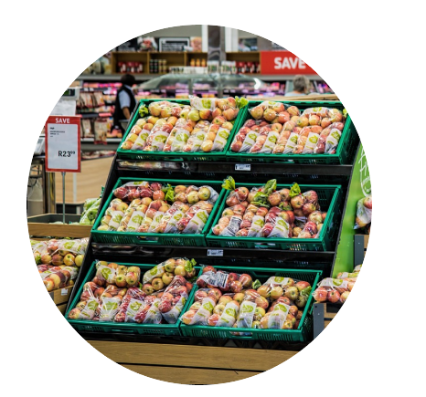

Verpackungskonsum bietet in Deutschland zahlreiche Vorteile. Erstens schützt er Lebensmittel vor Verunreinigungen und Verlängerung der Haltbarkeit, was zu weniger Lebensmittelverschwendung führt. Zweitens ermöglicht er die einfache Portionierung und Handhabung, was besonders für Haushalte mit wenig Zeit wertvoll ist. Drittens trägt Verpackung zur Produktsicherheit bei, indem sie Manipulationen verhindert und Konsumenten informiert. In einem gefüllten Supermarkt sehen wir die Vielfalt und Frische der Produkte, die durch effektive Verpackungslösungen gewährleistet wird. Schließlich erleichtert Verpackung den Transport und die Lagerung, was den Zugang zu einer breiten Produktpalette sicherstellt.

Verpackungskonsum hat auch erhebliche Nachteile. Der Müll an den Stränden zeigt die Umweltbelastung durch Plastikverpackungen, die häufig in Meeren und an Küsten landen. Diese Abfälle bedrohen marine Ökosysteme und gefährden die Tierwelt. Außerdem tragen Einwegverpackungen zur Ressourcenverschwendung bei, da ihre Herstellung viel Energie und Rohstoffe verbraucht. Die Entsorgung von Verpackungsmüll belastet zudem Deponien und Recyclinganlagen, was zu zusätzlichen Kosten und Umweltproblemen führt. Insgesamt erfordert der Verpackungskonsum eine kritische Betrachtung und verstärkte Bemühungen um nachhaltige Lösungen.